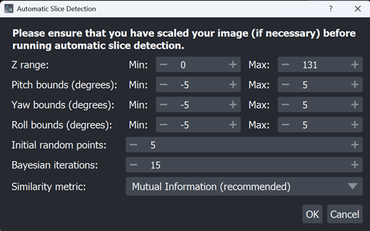

GSoC 2025: brainglobe-registration#
Introduction#
Hi, I’m Saarah. The intersection of healthcare and software development has always been important to me, which is why spending my summer with the Neuroinformatics Unit has been the perfect opportunity to bring together the work I love.
Project: BrainGlobe: Automating Region Selection in brainglobe-registration
Mentors: Igor Tatarnikov, Alessandro Felder, Adam Tyson
Project Overview#
Over the summer, I worked on extending the
brainglobe-registration
plugin, focusing on making atlas alignment more accessible and less
error-prone for users without a neuroscience background.
Thus far, choosing the correct atlas slice and orientation has been a manual
task – requiring users to scroll through volumes, make rough visual
judgements, and enter rotation values by hand. My project aimed to automate
this step, using
BayesianOptimization
to identify the best matching slice and orientation parameters directly
from the data.
The result is a new Automatic Slice Detection widget in the plugin, which not only handles single 2D images but can also align slabs of consecutive slices.

The optimiser identifies the atlas slice and rotation parameters that best match the moving image, and then updates the Napari widget accordingly:

For slabs, the optimiser matches the first and last slices and then interpolates alignment parameters across the stack, so that users can align larger volumes in one go. I have also written detailed documentation outlining exactly how to use these features.
In addition to the core project requirements, I also worked on enhancing the project following discussions with my mentors. A key part of this work was building clear and informative logging – every optimisation step logs the parameters tested, its similarity score, the corresponding rotated slice image, and the rotation parameters. This makes the process more transparent and provides a useful record for reproducibility.
Working on this project has been a valuable experience in bridging methods from optimisation and image analysis with practical neuroscience workflows. I particularly enjoyed balancing algorithmic design with UX considerations, such as keeping the interface intuitive while still exposing enough flexibility for advanced use.
Collaborating with the NIU team also gave me a deeper appreciation of the importance of open, well-documented tools in neuroinformatics, and the work that goes into making them robust and user-friendly.
Looking back, the most rewarding part was seeing the tool go from concept to a usable feature that I hope will save researchers time and difficulty in their workflows. Contributing to the BrainGlobe ecosystem has been a greatly rewarding opportunity, and I am incredibly excited to see how these tools continue to evolve in the future.
Repositories#
Thank you to my mentors and the incredible team at NIU for all of their support and guidance!